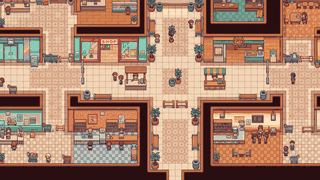

Créditos
Luiz - Flavio - Breno - Pedro
Desenvolvimento de Games
UNIFESP ICT - 2026
Prof. Fabio Cappabianco
Fonte: Press Start 2P (OFL)
História
Fase 1: Corredores centrais
A fase ainda está em produção.
Até a próxima!
A mamãe espera por você.

Uma criança perdida no shopping
Luiz - Flavio - Breno - Pedro
Desenvolvimento de Games
UNIFESP ICT - 2026
Prof. Fabio Cappabianco
Fonte: Press Start 2P (OFL)
Fase 1: Corredores centrais
A fase ainda está em produção.
A mamãe espera por você.